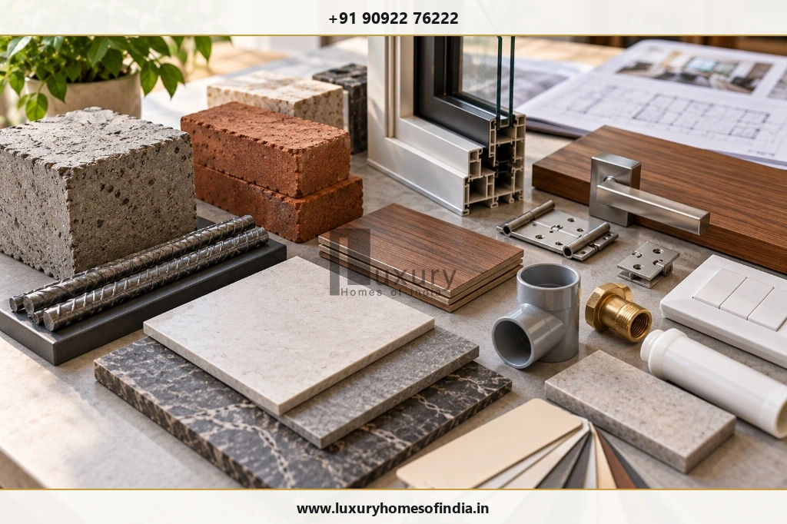
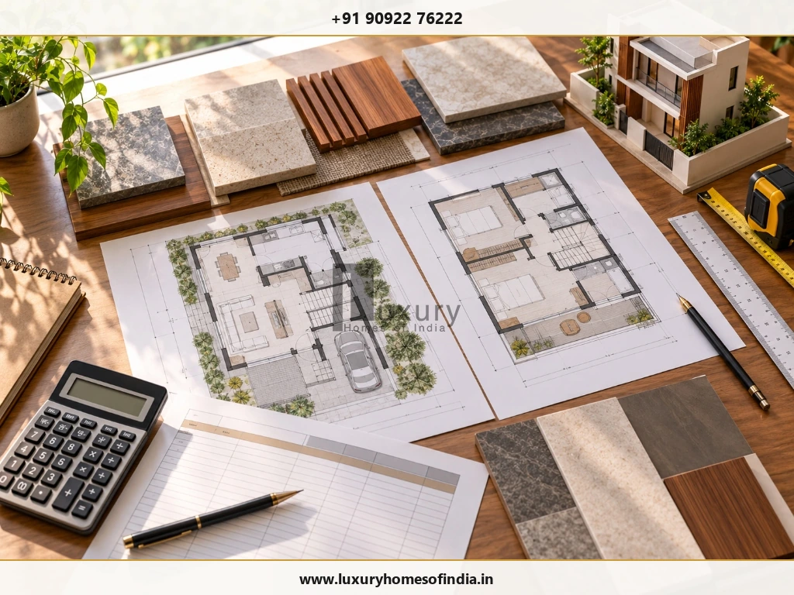
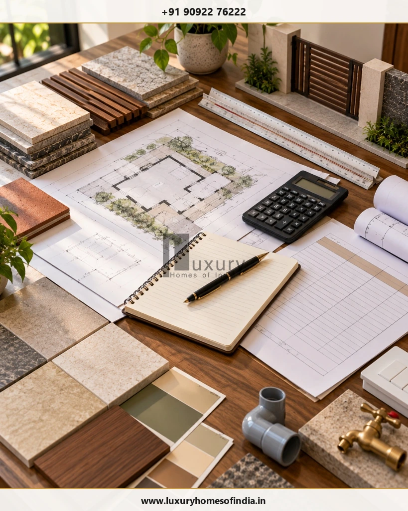

Executive Summary for Homeowners
Building a G+1 house in Chennai in 2026 requires a budget based on the combined built-up area of both floors, structural requirements, materials, finishes and the work included in the construction contract. For preliminary planning, this guide uses illustrative construction rates of ₹1,900–₹2,300 per sq ft for standard construction, ₹2,300–₹2,800 for a selected premium band and ₹2,800–₹3,500 for a higher-end finish band. These are budgeting assumptions, not verified LHI prices or guaranteed market rates. At those rates, a 2,000 sq ft G+1 house works out to ₹38–70 lakh for the core construction calculation, depending on the selected band. Land, approvals, professional fees, compound walls, utilities, interiors and external works may be additional. Before committing to a budget, confirm the current rates, measurement method, specifications and exclusions in a written, project-specific quotation.

1. What Does G+1 Mean in House Construction?
G+1 means a building with a ground floor and one first floor. It describes two floors in total.
For example, a house with 1,000 sq ft of built-up area on the ground floor and another 1,000 sq ft on the first floor has a combined built-up area of 2,000 sq ft.
Construction costs are commonly estimated using built-up area, but the exact measurement convention can differ between contractors. Confirm how stairs, balconies, covered spaces and other areas are measured in the quotation.
Plot area and permissible construction area are not interchangeable. The final design must comply with the applicable planning and building requirements for the site.
2. G+1 House Construction Cost in Chennai: 2026 Estimates
The following table uses the illustrative rate bands stated in this guide. It is intended for preliminary arithmetic, not as a price list or a substitute for a project estimate.
| Total built-up area | Standard ₹1,900–₹2,300/sq ft |
Selected premium band ₹2,300–₹2,800/sq ft |
Higher-end band ₹2,800–₹3,500/sq ft |
|---|---|---|---|
| 1,000 sq ft (500 G + 500 F1) |
₹19–23 lakh | ₹23–28 lakh | ₹28–35 lakh |
| 1,200 sq ft (600 G + 600 F1) |
₹22.8–27.6 lakh | ₹27.6–33.6 lakh | ₹33.6–42 lakh |
| 1,500 sq ft (750 G + 750 F1) |
₹28.5–34.5 lakh | ₹34.5–42 lakh | ₹42–52.5 lakh |
| 1,800 sq ft (900 G + 900 F1) |
₹34.2–41.4 lakh | ₹41.4–50.4 lakh | ₹50.4–63 lakh |
| 2,000 sq ft (1,000 G + 1,000 F1) |
₹38–46 lakh | ₹46–56 lakh | ₹56–70 lakh |
| 2,400 sq ft (1,200 G + 1,200 F1) |
₹45.6–55.2 lakh | ₹55.2–67.2 lakh | ₹67.2–84 lakh |
How to interpret the table: Multiply the combined built-up area by the selected rate. The category names are illustrative; builders do not necessarily use the same definitions of standard, premium or luxury construction.
These calculations do not establish that all the listed work is included in a contractor's package. Ask whether the price covers the foundation, structural frame, masonry, waterproofing, electrical and plumbing installations, finishing materials, staircase, terrace treatment and applicable taxes. Confirm the treatment of approvals, professional fees, utilities, interiors and external works separately.
3. Example: Cost to Build a 2,000 Sq Ft G+1 House
Suppose the planned house has:
- Ground-floor built-up area: 1,000 sq ft
- First-floor built-up area: 1,000 sq ft
- Total built-up area: 2,000 sq ft
Using the illustrative rates:
| Rate band | Calculation | Indicative amount |
|---|---|---|
| Standard | 2,000 × ₹1,900–₹2,300 | ₹38–46 lakh |
| Selected premium | 2,000 × ₹2,300–₹2,800 | ₹46–56 lakh |
| Higher-end | 2,000 × ₹2,800–₹3,500 | ₹56–70 lakh |
These amounts are calculated examples, not confirmed quotations for a particular Chennai property.
For a more useful estimate, prepare a schedule of quantities and specifications, then obtain quotations from contractors using the same drawings and scope. Compare the inclusions and exclusions before comparing the final totals.
For a deeper look at 2,000 sq ft specifications, see LHI's comprehensive guide on the cost to build a 2,000 sq ft house in Chennai.
4. Does a G+1 House Cost More Than a Single-Storey House?
A G+1 house includes additional structural and finishing work compared with a single-storey building of the same footprint. The design may require a staircase, an additional floor slab, upper-floor masonry, supporting structural elements and additional electrical, plumbing and finishing work.
The foundation and structural frame must be designed for the intended building and its loads. Their requirements depend on site conditions and the design prepared by qualified professionals.
The total construction cost will usually be higher when more floor area is built. However, the cost per square foot does not necessarily increase in direct proportion to the total area because some work is shared and other work depends on the layout and specification.
When comparing quotations, ask for a clear breakdown of the ground floor, first floor, staircase, foundation, shared services and finishing items.
5. What Determines the Cost of a G+1 House in Chennai?

5.1 Soil conditions and foundation design
Foundation requirements depend on the site's soil characteristics, groundwater conditions, structural loads and the design. A qualified structural engineer should determine the appropriate foundation system based on the available site information.
Do not assume that the same foundation specification is suitable for every plot.
5.2 Structural layout
Columns, beams, slabs, staircases, balconies and large openings influence material quantities and execution requirements. Double-height spaces, long spans and cantilevered elements may require more complex engineering and construction.
5.3 Materials and finish specifications
Concrete, reinforcement steel, masonry, flooring, doors, windows, electrical components, plumbing products and sanitaryware all contribute to the cost.
Ask for specific product descriptions, grades, sizes and finish standards rather than relying on terms such as “premium materials.”
5.4 Interior requirements
Modular kitchens, wardrobes, custom furniture, decorative ceilings, specialist lighting and home automation may not be part of a basic construction package.
Decide which items belong in the core construction contract and which will be procured through a separate interior package.
5.5 Site access and preparation
Site access, storage space, transportation, ground conditions and required preparation work can affect execution costs. Their impact must be assessed for the actual property.
5.6 Design changes and rework
Changes to room layouts, bathroom locations, staircases, service routes or material selections after work begins can increase costs and disrupt the schedule.
Finalising drawings, specifications and major selections before construction helps reduce avoidable rework.
6. Additional Costs Beyond the Construction Rate
One important budgeting step is separating core construction from the other expenses involved in completing a house.

| Additional item | What to confirm |
|---|---|
| Architectural and structural design | Scope of drawings, engineering and consultant fees |
| Soil investigation | Whether testing is required and who arranges it |
| Building approval | Applicable authority, submission requirements and fees |
| Compound wall and gate | Dimensions, materials and gate specification |
| Underground water sump | Capacity, construction and plumbing connections |
| Overhead water tank | Capacity, support and connections |
| Borewell or water connection | Feasibility, installation and applicable charges |
| Electricity connection | Sanctioned requirements and applicable fees |
| Interior works | Kitchen, wardrobes, furniture, lighting and appliances |
| External works | Drainage, paving, landscaping and outdoor lighting |
| Taxes and professional charges | Which amounts are included in the quoted price |
| Contingency | Allowance for unforeseen conditions and approved changes |
Not every project requires every item, and some may already be included in a contractor's scope. Prepare a separate allowance for each relevant item and avoid counting the same expense twice.
For more detail, read LHI's guide to hidden costs in house construction in Chennai.
7. Standard vs Premium vs Higher-End G+1 Construction
Construction categories are not standardised across all builders. The comparison below describes possible differences in scope rather than guaranteeing a particular finish at a particular rate.
| Feature | Standard specification | Premium specification | Higher-end specification |
|---|---|---|---|
| Architectural planning | Practical layout | More customised planning | Bespoke design and detailing |
| Flooring | Specified standard tiles or equivalent | Upgraded tiles or selected stone | Premium stone or specialist finishes |
| Doors and windows | Specified standard products | Upgraded hardware and finishes | Custom or higher-performance systems where specified |
| Bathrooms | Specified standard fittings | Upgraded sanitaryware and fittings | Premium fixtures and coordinated finishes |
| Lighting | Functional lighting points | More layered lighting | Bespoke lighting or smart controls where included |
| Interiors | Limited or separately priced | More extensive joinery | Custom cabinetry and specialist finishes |
| Building systems | Standard electrical and plumbing scope | Upgraded provisions where specified | Advanced automation or HVAC where included |
A higher rate does not automatically include every appliance, wardrobe, kitchen, air-conditioning system or external feature. Only the written specification and scope determine what the contractor is providing.
8. How to Manage Construction Costs Without Compromising Safety
Cost control should focus on design coordination, clear specifications and reducing avoidable rework—not on weakening structural safety or essential building quality.
Finalise the layout early
Resolve room sizes, staircase placement, bathrooms and major service routes before construction progresses.
Compare like-for-like quotations
Give each shortlisted contractor the same drawings and specifications.
Choose finishes strategically
Prioritise durability, maintenance and the features that matter most to your household.
Coordinate building services
Plan electrical, plumbing and air-conditioning provisions before closing concealed work.
Approve materials in advance
Confirm selections and procurement requirements early enough to minimise avoidable delays.
Track variations in writing
Record the price and scope impact of each approved change.
Inspect critical work
Arrange appropriate checks for structural work, concealed services and waterproofing before they are covered.
For more practical suggestions, read LHI's guide to reducing house construction costs in Chennai without compromising quality.
9. What Should a G+1 Construction Quotation Include?
Before appointing a contractor, check that the quotation covers or explicitly excludes:

- Total built-up area and measurement method.
- Foundation assumptions and structural scope.
- Concrete, reinforcement and masonry specifications.
- Electrical and plumbing work.
- Waterproofing scope and testing.
- Flooring, doors, windows and painting.
- Staircase, terrace and roof treatments.
- Kitchen and interior items.
- Compound wall, sump and other external works.
- Applicable taxes and professional fees.
- Payment milestones and variation procedures.
- Agreed construction schedule.
- Quality inspections, handover documents and defect rectification arrangements.
Ask for a written list of exclusions and a payment schedule linked to clearly defined work stages. The contract should also explain how variations are approved and priced.
10. How Long Does It Take to Build a G+1 House?
Construction duration depends on the total built-up area, design complexity, foundation requirements, approvals, material availability, site conditions and finish level. A customised residence may require a different schedule from a straightforward house with a simpler specification.
A project-specific programme should identify the major stages:
- Site assessment and design.
- Required approvals.
- Foundation and structural work.
- Masonry and building services.
- Waterproofing and finishes.
- Interiors and external works.
- Testing, snagging and handover.
The actual duration should be agreed with the project team after reviewing the approved drawings, work scope, procurement requirements and site conditions.
See LHI's comprehensive step-by-step house construction process: from plot to handover.
Frequently Asked Questions
What is the cost to build a G+1 house in Chennai in 2026?
The cost depends on total built-up area, structural design, materials, finish specifications and the contractor's scope. Using this guide's illustrative rates, a 2,000 sq ft house calculates to ₹38–46 lakh in the standard band, ₹46–56 lakh in the selected premium band and ₹56–70 lakh in the higher-end band. These are budgeting calculations, not verified current market rates or LHI prices.
Does G+1 mean two floors?
Yes. G+1 means a ground floor and one first floor, making two floors in total.
How much does a 1,000 sq ft G+1 house cost?
First establish whether 1,000 sq ft is the total built-up area or the area of each floor. If 1,000 sq ft is the combined total, the illustrative calculation at ₹1,900–₹3,500 per sq ft is ₹19–35 lakh. If each floor is 1,000 sq ft, the combined area is 2,000 sq ft and the calculation must use that larger area.
Is construction cost calculated on plot area or built-up area?
Many quotations use built-up area, but the measurement convention varies. Ask the contractor to explain which areas are counted, including stairs, balconies and covered spaces where applicable.
Does the construction rate include interiors?
Not necessarily. Modular kitchens, wardrobes, furniture, appliances, decorative lighting and other interior items may be excluded or covered only by specific allowances. Check the written inclusion and exclusion list.
Does a G+1 house require a different foundation from a single-storey house?
The appropriate foundation depends on soil conditions, structural loads and engineering requirements. A qualified structural engineer should determine the design for the proposed building.
How can I get an accurate construction estimate?
Prepare the plot details, proposed floor plans, combined built-up area, material specifications and site location. Request a detailed bill of quantities or specification-based quotation, and confirm the exclusions and applicable additional costs.
Are these LHI's official construction prices?
No. The figures in this article are illustrative budgeting assumptions. An LHI proposal must be confirmed through a project-specific quotation based on the actual scope, specifications and site conditions.
Plan Your G+1 House Construction Budget with Clarity
The cost to build a G+1 house in Chennai depends on more than the number of floors. Combined built-up area, foundation design, materials, finishes, building services and external work all influence the overall investment.
Start by calculating the total area of both floors. Then prepare a separate allowance for approvals, professional fees, utilities, compound walls, water storage, interiors and other items not covered by the core construction quote.
A clear design, detailed BOQ and transparent contractor agreement help you compare proposals more confidently and reduce misunderstandings about the final scope.
Planning a G+1 House in Chennai?
Luxury Homes of India welcomes enquiries from homeowners planning residential construction projects.
Share your plot dimensions, proposed built-up area, preferred specifications and site location to begin discussing your requirements.
Disclaimer: All rates and calculations in this article are illustrative budgeting assumptions for 2026, not a binding LHI quotation or a guarantee of current prices. Actual costs depend on site conditions, design, specifications, contractor scope, applicable requirements and market conditions. Land cost and certain approval, professional, interior and external-work expenses may be excluded. Obtain a project-specific quotation before making financial decisions.
Written by: Luxury Homes of India Editorial | Reviewed by: LHI In-House Technical Team